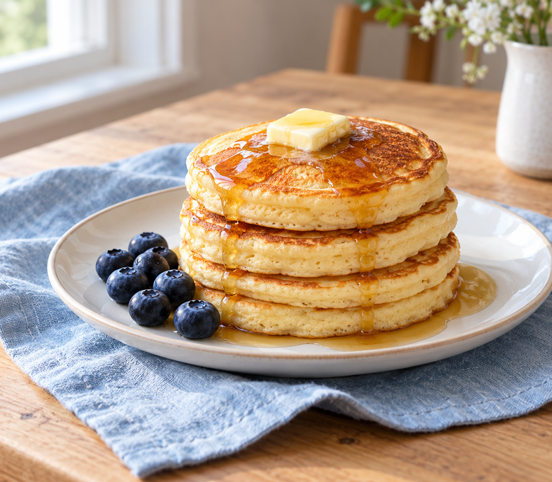

Golden edges. Soft centers.
Fluffy Pancakes
An easy start to a slow morning

A bowl, a whisk and a warm pan are all you need for this breakfast. Keep the batter a little lumpy, give it a short rest and cook gently for a stack of soft, golden pancakes.
Makes about 8 medium pancakes · Serves 4
Preparation: 10 minutes · Cooking: about 15 minutes